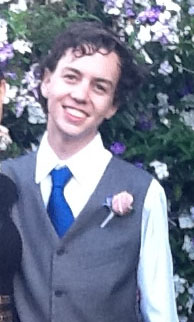

James Ryan is an IT student at JCU living in Townsville, Queensland.
Born in February of 1994 in Mount Isa, he spent his days riding bikes and not doing anything too important.
Now he spends his days programming and walking up castle hill for fun. What an interesting fellow.